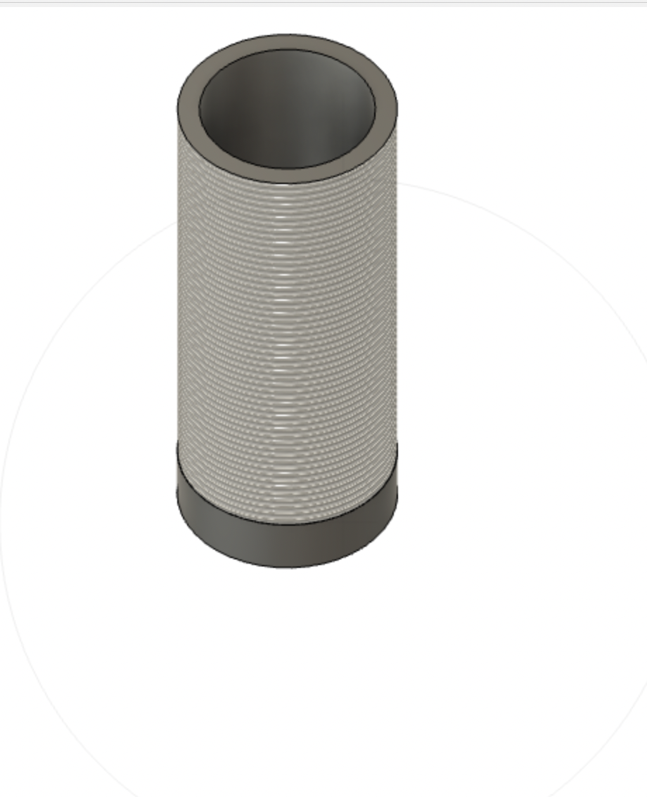

Do Something with an arduino
This week was all about 3D printing. Our first task was to design and print something that could not be easily made using subtractive techniuqes. The first thing that came to mind was things with overhangs and concentric things. For example, it would be difficult to make concentric spheres like this in a CNC machine or laser cutter:

However, this was not exactly functional and was more of a knicknack. As such I decided on printing something helpful. Namely, during the winter I take vitamind D supplements since there is no sun. However, im supposed to take them with food. This makes me usually carry them around in a plastic bag. I decided then to print a small pill container, except that I printed it with threads fitting your average bottle cap standard. This way, I can use any bottle cap I come across as a top if I lose the top instead of creating more waste by printing a new one!
I ended up with this which you can download for yourself. Download my STL file <\a>
The next thing was a project budget breakdown. Materials: Bearings: $5 Spinning top body (wood or plastic, maybe 3D printed): $10 Weight for balance: $2 Glue and screws: $3 Sandpaper: $2 Total material cost: $22 Tools: Drill: 0 Drill bits: 0 Jigsaw or coping saw: 0 Screwdriver: 0 Sandpaper: 0 Total tool cost: 0 Miscellaneous: Digital Gyroscope: $10 Small DC motor: $4 Control board: $30 Bluetooth Modules: $40
Our last assignment was to 3D scan something using telemetry. Unfortunaltely the machines were all broken the two times I tried to go to lab to do this scanning and I couldnt quite get a scan to work just using my iPhone. This is something I will certainly try again next week!